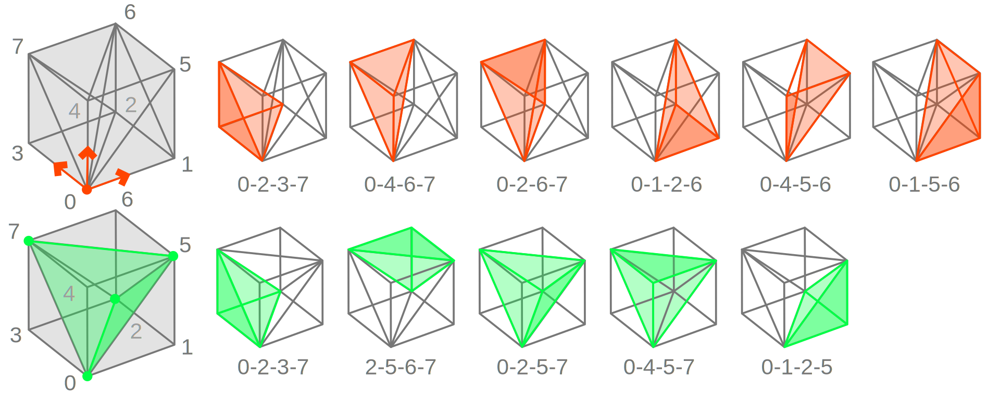
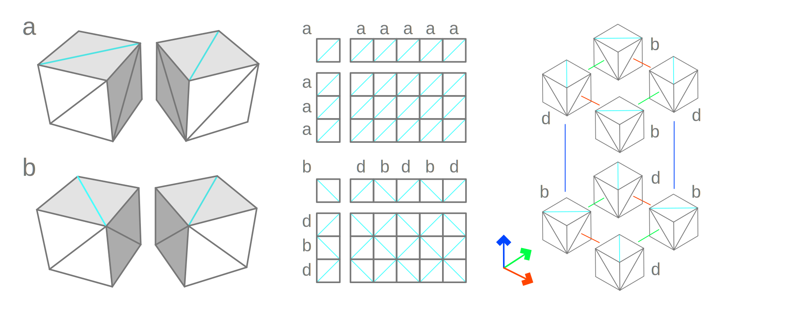
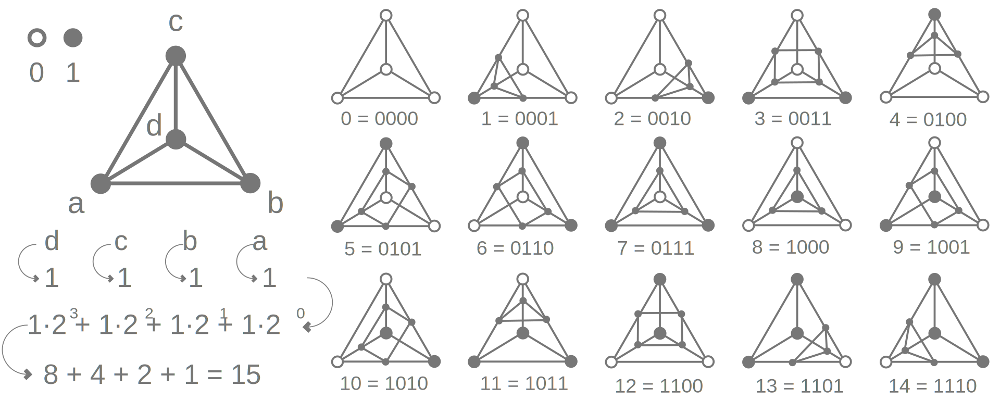

Volumetric Representations
For certain applications, including medical, engineering and scientific, the outer shape of solid objects is just insufficient. Consider any physical object with varied interior material properties for instance. Such objects cannot be represented easily using the above representations.
In general, the same challenge of representation is encountered in every scenario where we need to address information, physical or otherwise, volumetrically. In other words, to consider space as a dense set of properties defined at every point within it.
There are at least two ways to achieve this including (a) structured, where space is represented using for instance a regular 3D grid of properties, and (b) unstructured, where point clouds are used to carry the information. In both cases the concept of a shape is implicit in the sense that it is subject to defining which property, or relationship thereof, is of interest and then extracting it.
The data associated with points in space may be sourced from sensors such as CT and 3D scanners, from simulations such as FEA and CFD, or from mathematical functions whereby three coordinates produce a value v = f( x, y, z ).
Voxel Space
Voxels are 3D pixels associated with regular grids of points, which are typically rectangular, and the volumes between them, typically cubes. Using this representation it is possible to associate any kind of information with the points and/or the volumes. Shapes such as surfaces and solids may be extracted by determining face elements that adhere to some rule.
Capabilities available using this representation include: (a) surfaces of arbitrary topology can be represented, (b) Boolean operations can be computed in a trivially, (c) some unique operations such as blending shapes. Limitations include: (a) they are computationally much more expensive than other representations, (b) the surfaces and solids are finite approximations which are often reduced to unstructured meshes.
Point Grid
The implementation below defines a grid using an axis aligned bounding box and a resolution, that is the number of points, per axis. The points of the grid are not computed, to save memory, but instead interpolated. The values associated per point are just scalar initially set to zero. They are stored in a nested list of floats. The PointIndices( ) enumerator simplifies the process of iterating over all points without using triple for-loops.
""" Voxel Grid
"""
class VoxelGrid:
""" Constructor
"""
def __init__( self, minimum, maximum, resolution ):
self.Min = minimum #-- Minimum Point : Point3d
self.Max = maximum #-- Maximum Point : Point3d
self.Count = resolution #-- Resolution : [int, int, int]
self.Reset( )
""" Reset Values
"""
def Reset( self, value = 0.0 ):
nx, ny, nz = self.Count
self.Values = [[[0.0
for iz in range( nz )]
for iy in range( ny )]
for ix in range( nx )]
return self
""" Point Index Enumeration
"""
def PointIndices( self ):
nx, ny, nz = self.Count
for ix in range( nx ):
for iy in range( ny ):
for iz in range( nz ):
yield ( ix, iy, iz )
""" Value at Index
"""
def ValueAt( self, ix, iy, iz ):
return self.Values[ix][iy][iz]
""" Point at Index
"""
def PointAt( self, ix, iy, iz ):
nx, ny, nz = self.Count
tx = ix / ( nx - 1 )
ty = iy / ( ny - 1 )
tz = iz / ( nz - 1 )
return Point3d(
self.Min.X * ( 1 - tx ) + self.Max.X * tx,
self.Min.Y * ( 1 - ty ) + self.Max.Y * ty,
self.Min.Z * ( 1 - tz ) + self.Max.Z * tz )
""" Grid Points
"""
def Points( self ):
for ix, iy, iz in self.PointIndices( ):
yield self.PointAt( ix, iy, iz )
""" All Grid Points
"""
grid = VoxelGrid(
Point3d( -1, -1, -1 ),
Point3d( 1, 1, 1 ),
[4, 5, 6] )
points = list( grid.Points( ) )
Voxel Grid
Voxels are defined as the vertices of boxes referenced from the lowest point indices with respect to the grid's axes. Their eight vertices are thus combinations of an [ix, iy, iz] index and the ones vector [+1, +1, +1]. The VoxelIndices( ) indices iterator produces all voxel indices for simplifying for-loops. Note that the iterator skips the last point per direction.
Voxel vertices are ordered counter clockwise in the XY-plane and then upwards in the Z-direction, as seen in the VoxelPointsAt( ) method. For constructing bounding boxes, only the reference index [ix, iy, iz] and the opposite extreme vertex [ix + 1, iy + 1, iz + 1] are required.
class VoxelGrid:
""" Voxel Index Enumerator
"""
def VoxelIndices( self ):
nx, ny, nz = self.Count
for ix in range( nx - 1 ):
for iy in range( ny - 1 ):
for iz in range( nz - 1 ):
yield ( ix, iy, iz )
""" Voxel Points at Index
"""
def VoxelPointsAt( self, ix, iy, iz ):
return [self.PointAt( ix + 0, iy + 0, iz + 0 ),
self.PointAt( ix + 1, iy + 0, iz + 0 ),
self.PointAt( ix + 1, iy + 1, iz + 0 ),
self.PointAt( ix + 0, iy + 1, iz + 0 ),
self.PointAt( ix + 0, iy + 0, iz + 1 ),
self.PointAt( ix + 1, iy + 0, iz + 1 ),
self.PointAt( ix + 1, iy + 1, iz + 1 ),
self.PointAt( ix + 0, iy + 1, iz + 1 )]
""" Voxel Enumerator
"""
def Voxels( self ):
for ix, iy, iz in self.VoxelIndices( ):
yield self.VoxelPointsAt( ix, iy, iz )
""" Bounding Box at Index
"""
def VoxelBoundsAt( self, ix, iy, iz ):
return BoundingBox(
self.PointAt( ix + 0, iy + 0, iz + 0 ),
self.PointAt( ix + 1, iy + 1, iz + 1 ) )
""" Bounding Box Enumerator
"""
def VoxelBounds( self ):
for ix, iy, iz in self.VoxelIndices( ):
yield self.VoxelBoxAt( ix, iy, iz )
""" All Bounding Boxes
"""
grid = VoxelGrid(
Point3d( -1, -1, -1 ),
Point3d( 1, 1, 1 ),
[4, 5, 6] )
boxes = list( grid.VoxelBounds( ) )
Using relative offsets [ix + dx, iy + dy, iz + dz] from the reference index [ix, iy, iz] is a very common idiom when using voxels. Instead of copying and pasting the same expression while adjusting the offsets, we can store them in a nested list, also known as a look up table, and simplify life as seen below.
class VoxelGrid:
""" Voxel Vertex Index LUT
"""
Vertices = [
[0, 0, 0], [1, 0, 0], [1, 1, 0], [0, 1, 0],
[0, 0, 1], [1, 0, 1], [1, 1, 1], [0, 1, 1]]
""" Voxel Values at Index
"""
def VoxelValuesAt( self, ix, iy, iz ):
return [self.Values[ix + dx][iy + dy][iz + dz]
for dx, dy, dz in VoxelGrid.Vertices]
""" Voxel Points at Index
"""
def VoxelPointsAt( self, ix, iy, iz ):
return [self.PointAt( ix + dx, iy + dy, iz + dz )
for dx, dy, dz in VoxelGrid.Vertices]
Interpolation
Evaluating points and values within each voxel using normalized parameters u, v and w, with respect to the grid's directions, can be performed with trilinear interpolation. The process uses the concept of linear interpolation between two points at a parameter recursively. The ability to approximate a value at each position is space is what makes this representation special.
Trilinear interpolation is computed by two bilinear interpolations for the upper a, b, c, d and lower e, f, g, h faces of the voxel using parameters u and v. The result are two points p and q within each face for which a linear interpolation using w computes the interior quantity.
Bilinear interpolation within a face a, b, c, d is computed by two linear interpolations between the upper a, b and lower edges d, c of a face using parameter u. These yield two points p and q which are interpolated with parameter v.
class VoxelGrid:
""" Linear Interpolation
"""
def Interpolate1D( self, nodes, t ):
return nodes[0] * ( 1 - t ) + nodes[1] * t
""" Bilinear Interpolation
"""
def Interpolate2D( self, nodes, u, v ):
return self.Interpolate1D(
[self.Interpolate1D( nodes[0:2], u ),
self.Interpolate1D( nodes[2:4], u )], v )
""" Trilinear Interpolation
"""
def Interpolate3D( self, nodes, u, v, w ):
return self.Interpolate1D(
[self.Interpolate2D( nodes[0:4], u, v ),
self.Interpolate2D( nodes[4:8], u, v )], w )
""" Evaluate Point and Value at Parameters
"""
def Evaluate( self, ix, iy, iz, u, v, w ):
points = self.VoxelPointsAt( ix, iy, iz )
values = self.VoxelValuesAt( ix, iy, iz )
return ( self.Interpolate3D( points, u, v, w ),
self.Interpolate3D( values, u, v, w ) )
Interpolating points at values along edges can be performed also in the linear sense. For an edge defined by two points p and q and the associated values u and v, the point at value w can be computed by first normalizing the value t = ( w - u ) / ( v - u ) and then performing point interpolation p * ( 1 - t ) + q * t. If w = u or w = v then t = 0 or t = 1 and thus the result will be p and q, respectively. Note that if u = v the interpolation raises division by zero.
class VoxelGrid:
""" Interpolate Edge at Value
"""
def InterpolateEdge( self, p, u, q, v, w ):
t = ( w - u ) / ( v - u )
return p * ( 1 - t ) + q * t
Tetrahedra
While voxels are simple, using them directly for extracting surfaces can get fairly complicated. Instead, using tetrahedra simplifies computations significantly. There are two ways to convert a voxel box to a list of tetrahedra: (a) connecting from the reference index to all faces of the box which requires six tetras, and (b) using the minimum decomposition which requires only five.

Using fewer tetrahedra produces surfaces with fewer faces but there is a problem: Unlike the six-tetrahedron decomposition which tiles nicely by translation, the five-tetrahedron case requires consecutive voxels to be reflected such that their edges coincide.

Reflecting voxels in a 3D checkerboard pattern can be expressed using bitwise operations, that is ( ix ^ iy ^ iz ) & 1. Using bitwise & 1 with any number returns its least significant bit. This is either 0 for even or 1 for odd numbers. The bitwise exclusive-or operation x ^ y between two numbers flips their bits using the truth table seen below.
ix ^ iy |
0 | 1 | ( ix ^ iy ) ^ iz |
0 | 1 |
|---|---|---|---|---|---|
| 0 | 1 | 0 | 1 | 0 | 1 |
| 1 | 0 | 1 | 0 | 1 | 0 |
Computing the vertices of tetrahedra given a voxel at index [ix, iy, iz] is based on a look up table, namely VoxelGrid.Tetras. It contains 2 groups, one for even and one for odd voxels. A group contains 5 lists, one per tetrahedron, with 4 indices each, one per vertex. The numbers address the offsets we need to apply as defined in the VoxelGrid.Vertices.
For example, the first entry [0, 2, 5, 7] represents a tetrahedron with (a) index 0 which maps to offset [0, 0, 0] that is the origin of the voxel, (b) index 2 which maps to offset [1, 1, 0] that is the upper-right node of the bottom face of the voxel, (c) index 5 which maps to offset [1, 0, 1] that is the upper-left node of the top face of the voxel, and (d) index 7 which maps to offset [0, 1, 1] that is the lower-right node of the top face of the voxel.
class VoxelGrid:
Tetras = [
[[0, 2, 5, 7], [0, 4, 5, 7], #-- Even
[0, 2, 3, 7], [2, 5, 6, 7],
[0, 1, 2, 5]],
[[0, 1, 3, 4], [1, 4, 5, 6], #-- Odd
[3, 4, 6, 7], [1, 2, 3, 6],
[1, 3, 4, 6]]]
With those concepts in place, the TetrahedronPointsAt( ) method: (a) first computes the parity and selects the appropriate reflection = Tetras[parity], (b) then it selects one of the five tetrahedra tetra = reflection[index], where index is in [0, 4], (c) then for each vertex in the tetrahedron, it looks up the associated offset = Vertices[vertex], and (d) evaluates the grid point using the current voxel index [ix, iy, iz] with the computed offset using point = PointAt( ix + dx, iy + dy, iz + dz ).
class VoxelGrid:
""" Tetrahedron Points
"""
def TetrahedronPointsAt( self, ix, iy, iz, index ):
offsets = self.TetrahedronOffsetsAt( ix, iy, iz, index )
return [self.PointAt( ix + dx, iy + dy, iz + dz )
for dx, dy, dz in offsets]
""" Tetrahedron Values
"""
def TetrahedronValuesAt( self, ix, iy, iz, index ):
offsets = self.TetrahedronOffsetsAt( ix, iy, iz, index )
return [self.Values[ix + dx][iy + dy][iz + dz]
for dx, dy, dz in offsets]
""" Tetrahedron Points and Values
"""
def TetrahedronPointsAndValuesAt( self, ix, iy, iz, index ):
offsets = self.TetrahedronOffsetsAt( ix, iy, iz, index )
points, values = [], []
for dx, dy, dz in offsets:
points.append( self.PointAt( ix + dx, iy + dy, iz + dz ) )
values.append( self.Values[ix + dx][iy + dy][iz + dz] )
return ( points, values )
""" Tetrahedra Points and Values Enumerator
"""
def TetrahedraAt( self, ix, iy, iz ):
for index in range( len( VoxelGrid.Tetras[0] ) ):
yield self.TetrahedronPointsAndValuesAt( ix, iy, iz, index )
""" Vertex Offset for Tetrahedron
"""
def TetrahedronOffsetsAt( self, ix, iy, iz, index ):
tetrahedron = self.TetrahedronAt( ix, iy, iz, index )
return [VoxelGrid.Vertices[vertex]
for vertex in tetrahedron]
""" Tetrahedron for Decomposition
"""
def TetrahedronAt( self, ix, iy, iz, index ):
tetrahedra = self.ReflectionAt( ix, iy, iz )
return tetrahedra[index]
""" Reflected Voxel Decomposition
"""
def ReflectionAt( self, ix, iy, iz ):
parity = ( ix ^ iy ^ iz ) & 1
return VoxelGrid.Tetras[parity]
The method TetrahedronMeshAt( ) converts one tetrahedron of the voxel decomposition into a mesh that can be visualized and the VoxelTetrahedraMeshesAt( ) method converts all of them.
class VoxelGrid:
""" Tetrahedron Face Indices
"""
TetraFaces = [[0, 1, 2],
[1, 2, 3],
[2, 0, 3],
[0, 1, 3]]
""" Tetrahedron to Mesh
"""
def TetrahedronMeshAt( self, ix, iy, iz, index ):
mesh = Mesh( )
for vertex in self.TetrahedronPointsAt( ix, iy, iz, index ):
mesh.Vertices.Add( vertex )
for a, b, c in VoxelGrid.TetraFaces:
mesh.Faces.AddFace( a, b, c )
return mesh
""" Voxel to Meshes
"""
def VoxelTetrahedraMeshesAt( self, ix, iy, iz ):
count = len( VoxelGrid.Tetras[0] ) #-- Tetras = 5
return [self.TetrahedronMeshAt( ix, iy, iz, index )
for index in range( count )]
grid = VoxelGrid(
Point3d( -1, -1, -1 ),
Point3d( 1, 1, 1 ),
[4, 5, 6] )
tetras = grid.VoxelTetrahedraMeshesAt( 0, 0, 0 )
Triangulation
With the ability to interpolate any point and value within the voxel grid one way to extract a shape is by choosing a constant desired value w and selecting all associated points and form surfaces. This process produces an envelope also known as an iso-surface.
Consider two grid points p and q with values u and v. If the value w is within u and v, either u ≤ w ≤ v or v ≤ w ≤ u, then the line between p and q intersects the surface formed by all w values, because u and v are at the opposite sides of w. The point of intersection at w can be computed using the edge interpolation method developed earlier.
This principle extends to all edges of a tetrahedron. First each node's value in relationship with the iso-surface is considered. If all node values are smaller than the desired iso-value, then the tetrahedron is completely inside the volume bounded by the iso-surface; and the opposite occurs when all values are greater. The remaining cases represent intersection between the iso-surface and the tetrahedron, which takes place at its edges. If three edges intersect, then a triangle is generated and a quadrilateral for four intersections. With 4 edges, we need to consider all 16 combinations of potential intersection.

This algorithm is known as marching tetrahedra, which is simplification of the marching cubes method. The equivalent look-up table for voxel-surface intersection requires 28 or 256 entries, see Paul Bourke's detailed documentation.
The combinations are encoded using look up tables which help avoiding nested if-statements. The Polygons table contains 16 bits that map to the type of polygonal face, where 1 is for quads and 0 for triangles. Note that the first and last entries 2, that is completely inside and outside, are never used. The Windings table contains permutation information as for how to reorder the points of a tetrahedron in each case such that the interpolation between vertices and thus the surface normals of the resulting face are consistent.
class VoxelGrid:
""" Polygon IsQuad Table
"""
Polygons = [2, 0, 0, 1, #-- _ T T Q
0, 1, 1, 0, #-- T Q Q T
0, 1, 1, 0, #-- T Q Q T
1, 0, 0, 2] #-- Q T T _
""" Winding Order Table
"""
Windings = [[0, 0, 0, 0], #-- 0 - _ - 15
[0, 1, 2, 3], #-- 1 - T - 14
[1, 0, 3, 2], #-- 2 - T - 13
[0, 1, 2, 3], #-- 3 - Q - 12
[2, 3, 0, 1], #-- 4 - T - 11
[3, 1, 2, 0], #-- 5 - Q - 10
[2, 1, 3, 0], #-- 6 - Q - 9
[3, 0, 1, 2], #-- 7 - T - 8
[3, 2, 1, 0], #-- 8 - T - 7
[1, 2, 3, 0], #-- 9 - Q - 6
[0, 2, 1, 3], #-- 10 - Q - 5
[2, 1, 0, 3], #-- 11 - T - 4
[3, 2, 1, 0], #-- 12 - Q - 3
[1, 2, 3, 0], #-- 13 - T - 2
[0, 3, 2, 1], #-- 14 - T - 1
[0, 0, 0, 0]] #-- 15 - _ - 0
""" Reorders Points and Value for Consistent Normals
"""
def Permutate( self, case, points, values ):
i, j, k, l = VoxelGrid.Windings[case]
return ( [points[i], points[j], points[k], points[l]],
[values[i], values[j], values[k], values[l]] )
The sixteen scenarios of intersection between the iso-surface and the tetrahedron are encoded using four bits producing a case code with value from 0 to 15. The Scenario( ) method turns on a different bit for each node and combines them using addition (or bitwise or). The case code is used for selecting one of the data entries stored in the look up tables.
class VoxelGrid:
""" Scenario from Tetrahedron Values
"""
def Scenario( self, values, value ):
return ( ( 0b0001 if( values[0] < value ) else 0b0000 ) +
( 0b0010 if( values[1] < value ) else 0b0000 ) +
( 0b0100 if( values[2] < value ) else 0b0000 ) +
( 0b1000 if( values[3] < value ) else 0b0000 ) )
The IsoSurfaceAt( ) method iterates over all voxels and the associated tetrahedra per voxel. First it computes the scenario using the nodal values and then invokes the AddFace( ) method, if the tetrahedron intersects the iso-surface. Adding a new face requires determining whether the face is a triangle or quadrilateral and performing point and value permutation.
class VoxelGrid:
""" Iso-Surface at Value
"""
def IsoSurfaceAt( self, value ):
mesh = Mesh( )
for ix, iy, iz in self.VoxelIndices( ):
for points, values in self.TetrahedraAt( ix, iy, iz ):
case = self.Scenario( values, value )
if( case == 0 or case == 15 ): continue
self.AddFace( mesh, case, points, values, value )
return mesh
""" Create Iso-Surface Face at Value
"""
def AddFace( self, mesh, case, points, values, value ):
points, values = self.Permutate( case, points, values )
if( VoxelGrid.Polygons[case] ):
return self.AddQuad( mesh, points, values, value )
return self.AddTriangle( mesh, points, values, value )
Computing triangle or quadrilateral faces of intersection is performed by first interpolating the edge and iso-surface intersection points, followed by forming new mesh faces. Note that adding faces into a mesh in this manner, produces the equivalent of a triangle soup, where no vertices are shared across faces.
class VoxelGrid:
""" Create Triangular Face
"""
def AddTriangle( self, mesh, points, values, value ):
a, b, c, d = points
A, B, C, D = values
e = self.InterpolateEdge( a, A, b, B, value )
f = self.InterpolateEdge( a, A, c, C, value )
g = self.InterpolateEdge( a, A, d, D, value )
mesh.Faces.AddFace(
mesh.Vertices.Add( e ),
mesh.Vertices.Add( f ),
mesh.Vertices.Add( g ) )
return self
""" Create Quadrilateral Face
"""
def AddQuad( self, mesh, points, values, value ):
a, b, c, d = points
A, B, C, D = values
e = self.InterpolateEdge( d, D, a, A, value )
f = self.InterpolateEdge( d, D, b, B, value )
g = self.InterpolateEdge( c, C, b, B, value )
h = self.InterpolateEdge( c, C, a, A, value )
mesh.Faces.AddFace(
mesh.Vertices.Add( e ),
mesh.Vertices.Add( f ),
mesh.Vertices.Add( g ),
mesh.Vertices.Add( h ) )
return self
This polygonization scheme may be improved by checking each voxel for complete inclusion or exclusion and skipping iterating its tetrahedra in those cases. Also by maintaining a dictionary of edge intersections can improve performance by avoiding duplicate computations and producing compact meshes with shared vertices.
Implicit Surfaces
Voxel grids can be used for visualizing implicit surfaces f( x, y, z ) = v which are difficult to represent otherwise. This is because either there is no simple parametric representation or it is just algebraically too complicated to bring them in an explicit form. Implicit surfaces using voxel grids is trivial to implement. The method Implicit( ) requires a function which receives the coordinates of each point x, y, z in the grid and expects a value v. The demonstration below, builds the genus 2 surface as seen in the implicit surfaces article.
class VoxelGrid:
""" Implicit Surfaces by v <- f( x, y, z )
"""
def ImplicitSurface( self, function ):
for ix, iy, iz in self.PointIndices( ):
point = self.PointAt( ix, iy, iz )
value = function( point.X, point.Y, point.Z )
self.Values[ix][iy][iz] = value
return self
grid = VoxelGrid(
Point3d( -2, -2, -2 ),
Point3d( 2, 2, 2 ),
[32, 32, 32] )
grid.ImplicitSurface( lambda x, y, z: (
2 * y * ( y ** 2 - 3 * x ** 2 ) * ( 1 - z ** 2 ) +
( x ** 2 + y ** 2 ) ** 2 -
( 9 * z ** 2 - 1 ) * ( 1 - z ** 2 ) ) )
surface = grid.IsoSurfaceAt( 0.0 )
Distance Fields
Distance fields is a representation where solid primitives, and operations thereof, are expressed via their signed distance from a point, where the sign represents volume inclusion or exclusion. Given a point p in space and its projection point o with normal n onto an object, the signed distance is expressed by the dot product as d = n · ( p - o ).
Visualizing signed distance fields may be performed using the voxel grid approach by computing the distances between objects and the points of the grid, storing them as the associated values and then performing meshing. It is also possible to directly render them using GPU shaders, see Inigo Quilez's documentation.
Primitives
The implicit representation of spatial primitives such as spheres and cylinder was presented in the surfaces section earlier. The implementation below demonstrates the computation of their signed distances.
""" Sphere Primitive
"""
class Sphere:
def __init__( self, origin, radius ):
self.Origin = origin
self.Radius = radius
def SignedDistance( self, point ):
o, r = self.Origin, self.Radius
return o.DistanceTo( point ) - r
""" Cylinder Primitive
"""
class Cylinder:
def __init__( self, origin, direction, radius ):
self.Origin = origin
self.Direction = direction
self.Radius = radius
def SignedDistance( self, point ):
o, u, r = self.Origin, self.Direction, self.Radius
projection = o + u * ( point - o ) * u
return point.DistanceTo( projection ) - r
Parametric curves and surfaces can be converted to signed distance fields using their closest point methods. Curves are not orientable in the sense of a volume. Therefore, a radius can be used to express curved cylinders and pipes. Surfaces do provide normal vectors which may be used for slabs with directional thickness.
""" Pipe Primitive
"""
class Pipe:
def __init__( self, curve, radius ):
self.Curve = curve
self.Radius = radius
def SignedDistance( self, point ):
_, t = self.Curve.ClosestPoint( point )
projection = self.Curve.PointAt( t )
return projection.DistanceTo( point ) - self.Radius
""" Slab Primitive
"""
class Slab:
def __init__( self, surface, thickness ):
self.Surface = surface
self.Thickness = thickness
def SignedDistance( self, point ):
_, u, v = self.Surface.ClosestPoint( point )
_, plane = self.Surface.FrameAt( u, v )
distance = plane.Normal * ( point - plane.Origin )
return distance - self.Thickness
Implementing the signed distance field evaluation method is exactly the same as the implicit surface method. The signed distance of each point of the grid is evaluated against the subject primitive and the value is stored.
class VoxelGrid:
""" Signed Distance Field Primitive
"""
def SignedDistanceField( self, subject ):
for ix, iy, iz in self.PointIndices( ):
point = self.PointAt( ix, iy, iz )
distance = subject.SignedDistance( point )
self.Values[ix][iy][iz] = distance
grid = VoxelGrid(
Point3d( -2, -2, -2 ),
Point3d( 2, 2, 2 ),
[32, 32, 32] )
grid.SignedDistanceField(
Sphere( Point3d.Origin, 1.0 ) )
surface = grid.IsoSurfaceAt( 0.0 )
Offsetting
Computing offset surfaces and creating solid shells with thin walls is trivial with signed distance fields, as seen below. These geometric operations are considerably more complex using BReps. Moreover, implementing them as classes, adhering to a SignedDistance( point ) interface, enables a compositional style of expressing both geometric primitives and operations thereof.
class Offset:
def __init__( self, subject, distance ):
self.Subject = subject
self.Distance = distance
def SignedDistance( self, point ):
distance = self.Subject.SignedDistance( point )
return distance - self.Distance
class Shell:
def __init__( self, subject, thickness ):
self.Subject = subject
self.Thickness = thickness
def SignedDistance( self, point ):
distance = self.Subject.SignedDistance( point )
return abs( distance ) - self.Thickness
grid = VoxelGrid(
Point3d( -2, -2, -2 ),
Point3d( 2, 2, 2 ),
[32, 32, 32] )
grid.SignedDistanceField(
Shell( Sphere( Point3d.Origin, 1.0 ), 0.2 ) )
surface = grid.IsoSurfaceAt( 0.0 )
Booleans
Boolean operations between solids can be also trivially implemented using signed distance fields using the min( ) and max( ) built-in functions. Moreover, these operations can be combined in complex hierarchies in the same sense as construction solid geometry.
class BooleanUnion:
def __init__( self, subjects ):
self.Subjects = subjects
def SignedDistance( self, point ):
distances = [subject.SignedDistance( point )
for subject in self.Subjects]
return min( distances )
class BooleanIntersection:
def __init__( self, subjects ):
self.Subjects = subjects
def SignedDistance( self, point ):
distances = [subject.SignedDistance( point )
for subject in self.Subjects]
return max( distances )
class BooleanDifference:
def __init__( self, subject, _object ):
self.Subject = subject
self.Object = _object
def SignedDistance( self, point ):
subject = self.Subject.SignedDistance( point )
_object = self.Object .SignedDistance( point )
return max( subject, -_object )
grid = VoxelGrid(
Point3d( -2, -2, -2 ),
Point3d( 2, 2, 2 ),
[32, 32, 32] )
grid.SignedDistanceField( BooleanUnion(
[Sphere( Point3d( -0.5, 0, 0 ), 1 ),
Sphere( Point3d( +0.5, 0, 0 ), 1 )] ) )
surface = grid.IsoSurfaceAt( 0.0 )
Blending
Blending between shapes is also fairly straight forward to implement using a smooth version of the minimum function, see Inigo Quilez's presentation for additional details. The Blend class implements the quadratic interpolation scheme, where the parameter kappa adjust the strength of blending.
class Blend:
def __init__( self, subjects, kappa ):
self.Subjects = subjects
self.Kappa = kappa * 4.0
self.KappaInv = 1.0 / self.Kappa
def QuadraticMin( self, a, b ):
k, i = self.Kappa, self.KappaInv
h = max( k - abs( a - b ), 0.0 ) * i
return min( a, b ) - h * h * k * 0.25
def SignedDistance( self, point ):
distances = [subject.SignedDistance( point )
for subject in self.Subjects]
minimum = distances[0]
for distance in distances[1:]:
minimum = self.QuadraticMin(
minimum, distance )
return minimum
grid = VoxelGrid(
Point3d( -2, -2, -2 ),
Point3d( 2, 2, 2 ),
[32, 32, 32] )
grid.SignedDistanceField( Blend( [
Sphere( Point3d( -0.6, 0.0, 0.0 ), 0.4 ),
Sphere( Point3d( 0.6, 0.0, 0.0 ), 0.4 ),
Sphere( Point3d( 0.0, 0.5, 0.5 ), 0.4 )], 0.15 ) )
surface = grid.IsoSurfaceAt( 0.0 )